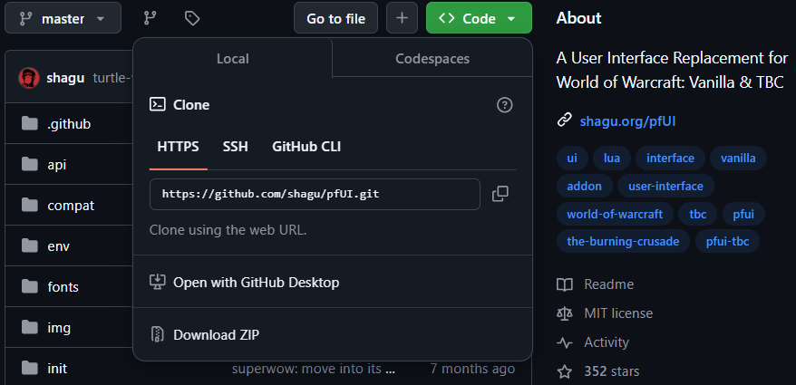
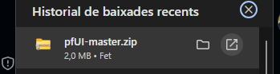
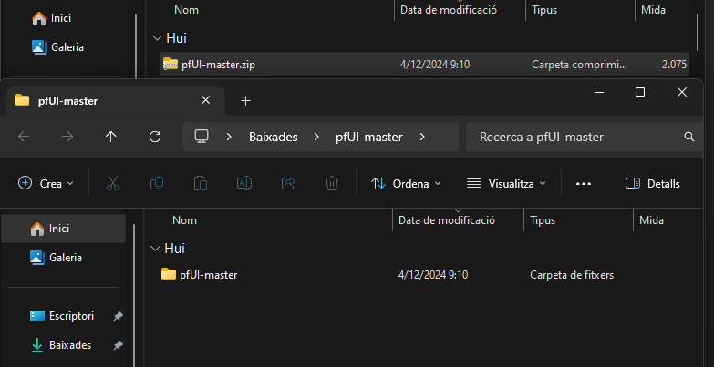

COMO INSTALAR ADDONS
Para instalar addons para el WOW 1.12.1 vamos a tener que descargar el archivo de github dandole al boton de Download ZIP.
Una vez descargado el archivo vamos a tener que descomprimir el archivo haciendo click derecho y descomprimir,podeis elegir la ruta donde se guardara la carpeta descomprimida.

Por ultimo vamos a tener que copiar la carpeta del addon y ir a nuestra carpeta del WOW , el INTERFACE y la carpeta ADDONS , alla vamos a pegar la carpeta .